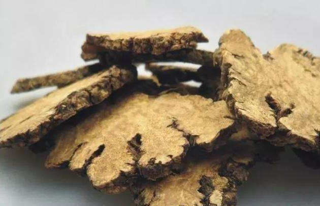

山楂
消食化积、活血化瘀，适用于食滞不化、瘀血疼痛。


乌梅
收敛止泻、生津止渴，用于治疗久泻不止、口干舌燥。

玫瑰茄
清热凉血、活血散瘀，用于治疗热病后期、瘀血疼痛。
山茱萸
补肝肾、固精缩尿，适用于肝肾不足、遗精尿频。
桑椹
滋阴补血、润燥通便，用于治疗阴虚血燥、肠燥便秘。
黄连
清热燥湿、泻火解毒，但苦寒伤胃，脾胃虚寒者慎用。
黄芩
清热燥湿、泻火解毒，适用于肺热咳嗽、湿热黄疸。
苦参
清热燥湿、杀虫止痒，用于治疗湿热带下、皮肤瘙痒。

柴胡
疏肝解郁、升举阳气，用于治疗肝郁气滞、气虚下陷。
知母
清热生津、滋阴降火，适用于阴虚内热、肺热咳嗽。
栀子
清热泻火、凉血解毒，用于治疗热病烦热、黄疸。
夜交藤
安神镇静、祛风湿，适用于失眠多梦、风湿痹痛。
甘草
补脾益气、清热解毒，用于调和药性、缓解药物毒性。

黄耆
补气固表、托毒生肌，用于治疗气虚自汗、疮疡不敛。
白术
健脾燥湿、安胎，适用于脾虚食少、胎动不安。

当归
补血调经、活血止痛，适用于血虚萎黄、月经不调。

沙参
养阴清肺、益胃生津，适用于肺热咳嗽、胃阴不足。


川芎
活血行气、祛风止痛，用于治疗头痛、胸痹。
白芷
疏风解表、消肿止痛，用于治疗风寒感冒、牙痛。

荜茇
温中散寒、止痛，用于治疗胃寒呕吐、腹痛。


牡蛎
软坚散结、收敛止汗，适用于瘰疬痰核、自汗盗汗。


海蛤壳
清热化痰、软坚散结，用于治疗痰热咳嗽、瘰疬。
紫菜
软坚散结、利水消肿，适用于瘿瘤、水肿。